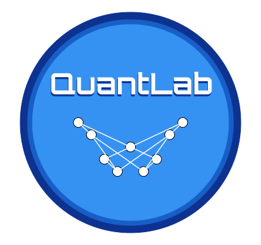
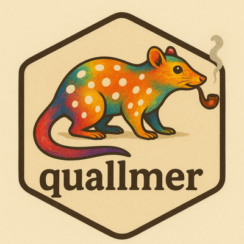
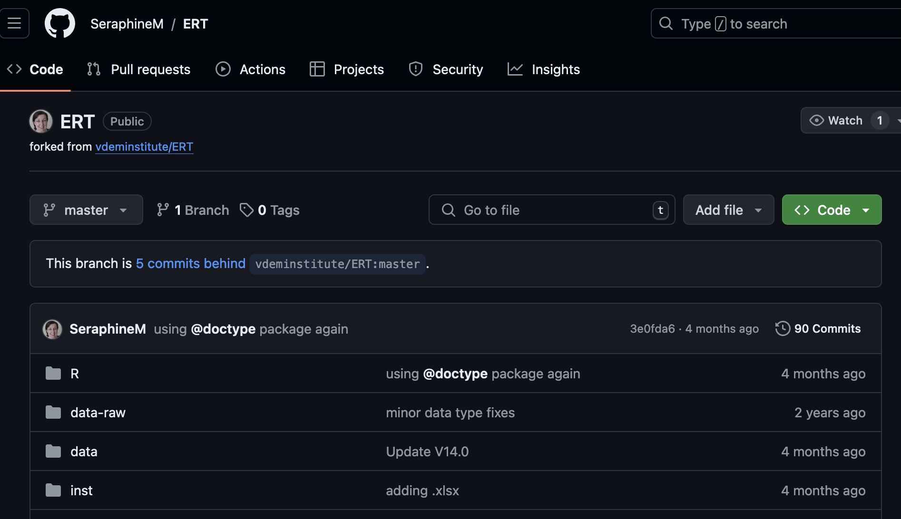
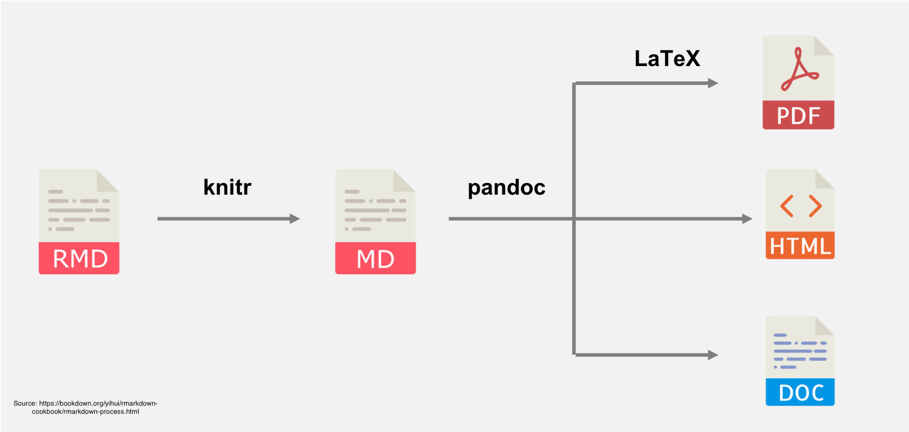
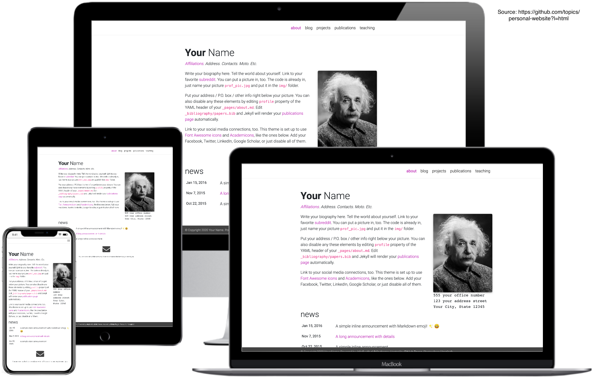

Tutorials, Webinars & Sharezone
Free online tutorials, recorded webinars, and session materials
Welcome to QuantLab
QuantLab is a network bringing together social scientists at the University of Melbourne and beyond to share insights in quantitative methods and research.
Co-founded by Seraphine F. Maerz (Political Science) and Irma Mooi-Reci (Sociology), QuantLab is an inclusive network that welcomes everyone — from students to established researchers — interested in learning about quantitative methods and computational techniques.
News: QuantLab is transitioning into a Tier 2 research group at the Faculty of Arts, with Michael Falk (Digital Studies) joining as stream leader and René Rejón (Faculty of Arts) as Outreach and Impact Lead. Our work is organised into three research streams:
- Political Communication and Discourse Analysis — led by Seraphine F. Maerz
- Computational Approaches to Workforce Mobility and Inequality — led by Irma Mooi-Reci
- Computational Literary Studies — led by Michael Falk
We offer hands-on seminars where you can learn cutting-edge methods, together with free online tutorials and session materials in our Sharezone — step-by-step guides on data management, reproducible research, and ready-to-use scripts in R, Stata, and Python. Most importantly, we provide a space to connect with fellow students and researchers, share ideas as well as knowledge, and collaborate.
Events in 2026
AI in Research – Brown Bag Workshop Series
A new collaboration between the Melbourne Data Analytics Platform (MDAP), QuantLab, and the Community of AI in Research (CAIR). These monthly lunchtime workshops offer a relaxed, hands-on space to build confidence with AI in research — each session runs from 12–1pm at Melbourne Connect, with an optional drop-in until 1.30pm. Bring your lunch, your laptop, and your curiosity. Open to researchers at all levels and across all disciplines.
Register and find full details via the MDAP announcement — see also the series flyer.
| Date | Topic | Presenter |
|---|---|---|
| 10/08/26 | Getting started with AI assistance for research: A hands-on introduction to using AI confidently in your research workflow. Manhari Room, Melbourne Connect — slides now available | Dr. Mel Mistica (MDAP), Dr. Seraphine F. Maerz (SSPS) |
| 14/09/26 | Equipping AI agents with tools: A practical walkthrough of giving AI agents the tools they need to get research work done. Manhari Room, Melbourne Connect | Dr. Daniel Russo-Batterham (MDAP) |
| 12/10/26 | Working with synthetic data: Generating and using synthetic data for research — when it helps, when it hurts, and how to do it well. Room M13, Melbourne Connect | Prof. Irma Mooi-Reci (SSPS) |
| 09/11/26 | How to build your own RAG: Build a retrieval-augmented generation pipeline from scratch and plug it into your own research materials. Room M01, Melbourne Connect | Taylor Ey (Melbourne Institute) |
| 14/12/26 | Analysing historical data with AI: Applying AI methods to historical sources — practical techniques and pitfalls. Manhari Room, Melbourne Connect | Dr. David Goodman (SHPS) |
Other 2026 events
| Date | Topic | Presenter |
|---|---|---|
| 31/03/26 | Analysing Qualitative Data with Large Language Models (LLMs): From small, exploratory coding to large-scale yet in-depth qualitative analysis, with replicable workflows | Dr. Seraphine F. Maerz, SSPS |
More events will be added for 2027, stay tuned!
Schedule 2025
We meet in Linkway, 4th floor John Medley Building.
| Date | Time | Topic | Presenter |
|---|---|---|---|
| 03/02/25 | 14:00-15:00 | Intro to Causal Inference and Treatment Effects | Dr. Chuck Huber, StataCorp LLC |
| 11/02/25 | 03:00-09:00 | Using AI for Text Analysis: An Introduction (online) | Dr. Seraphine F. Maerz |
| 18/02/25 | 10:00-16:00 | Using AI for Text Analysis: Advanced Applications (online) | Dr. Seraphine F. Maerz |
| 03/03/25 | 12:00-13:00 | Introduction to Version Control with Git | Prof. Michael Zyphur, Dr. Mar Quiroga |
| 20/03/25 | 09:30-12:30 | Partner Event: Get Started with R | MDAP |
| 31/03/25 | 12:00-13:00 | Regression Discontinuity Design | Dr. Amrita Mitra |
| 14/04/25 | 12:00-13:00 | Shut Up and Git | Dr. Tomasz Woźniak |
| 12/05/25 | 12:00-13:00 | Quantitative Text Analysis for Social Sciences | Dr. Maxim Ananyev |
| 26/05/25 | 12:00-13:00 | Python for Social Science Research | Dr. Daniel Russo-Batterham |
| 28/07/25 | 12:00-13:00 | Structural Modelling Using R (bsvars & bsvarSIGNs) | Dr. Tomasz Woźniak |
| 11/08/25 | 12:00-13:00 | Building Your Own RAG Pipeline from Scratch! | Taylor Ey |
Schedule 2024
We met in Arts West Research Lounge. Lunch was kindly sponsored by the School of Social and Political Science.
| Date | Time | Topic | Presenter |
|---|---|---|---|
| 05/08/24 | 11:30-13:00 | Launch of QuantLab Intro to R and Quarto | Seraphine F. Maerz, Irma Mooi-Reci |
| 26/08/24 | 12:00-13:00 | Using Stata for Panel Data | Irma Mooi-Reci |
| 09/09/24 | 12:00-13:00 | Spatial Econometrics: An Introduction | Ed Goldring |
| 10/09/24 | 10:00-11:30 | Introduction to Computational Social Science (online, Social Science Week) | Jason Thompson, MCDS |
| 07/10/24 | 10:00-16:00 | Quarto in RStudio (online) | Seraphine F. Maerz |
| 14/10/24 | 12:00-13:00 | Quantitative Text Analysis in R | Seraphine F. Maerz |
| 28/10/24 | 12:00-13:00 | Structural Equation Modeling (SEM) in Stata | Harry Ganzeboom |
| 26/11/24 | 10:00-16:00 | Using AI for Text Analysis in R (online) | Seraphine F. Maerz |
Browse our free online tutorials and recorded webinars on quantitative methods and computational techniques for social scientists — and download slides, code, and materials from our QuantLunch sessions.
Free online tutorials & webinars
Step-by-step guides on data management, reproducible research, and quantitative methods — plus recorded webinars. We warmly invite you to contribute — please contact us if you would like to share your tutorials, tips, or suggestions.

Quantitative Text Analysis in the Age of LLMs — FIRSA Webinar
18 Jun 2026 | Alfredo Hernández Sánchez, Seraphine F. Maerz, Bertrand De Longueville
FIRSA webinar recording bringing together researchers from Vilnius University, University of Melbourne, and the Joint Research Centre to discuss quantitative approaches to text analysis with large language models.

Using LLMs to Create Data Analysis Pipelines for Text-as-Data Research
SICSS Melbourne 2026 | Seraphine F. Maerz
Recorded talk from the Summer Institute in Computational Social Science on building reproducible LLM-powered pipelines for text-as-data research.

Coding texts with LLMs using quallmer
04 Feb 2026 | Seraphine F. Maerz
Introduction to the quallmer package for LLM-based qualitative coding in R — flexible codebooks, structured outputs, and transparent workflows.
How to use quanteda.llm for text analysis in R
03 Jun 2025 | Seraphine F. Maerz
Use the quanteda.llm package for LLM-powered text analysis — summarize, score, and validate large text corpora with OpenAI or Ollama.
How to use an open-source LLM in R for text analysis tasks
27 Jan 2025 | Seraphine F. Maerz
Get started with open-source LLMs for text analysis using Ollama and the rollama package in R — free, private, and locally stored.

How to use GitHub for collaborative RStudio projects
03 Oct 2024 | Seraphine F. Maerz
A minimal 3-step guide to using GitHub for collaborative RStudio projects — share code, data, and work together on research papers.

How to use R Studio with Quarto to write nice papers
04 Aug 2024 | Seraphine F. Maerz
Create beautiful Quarto documents combining code, analysis, and narrative — output to PDF, Word, or HTML with ease.

How to code your own personal website with Quarto
21 Jul 2024 | Seraphine F. Maerz
Build and deploy your own personal website with Quarto and GitHub in less than 30 minutes — no previous experience required.
Session materials
2026
AI in Research — Brown Bag Session 1: Getting Started with AI Assistance for Research
10 Aug 2026 | Dr. Mel Mistica (MDAP) & Dr. Seraphine F. Maerz (SSPS)
Analysing Qualitative Data with LLMs
31 Mar 2026 | Dr. Seraphine F. Maerz
Quallmer Tutorial
Hands-on: Analyzing Political Speeches with LLMs
Workshop at Griffith
LLM Masterclass | April 2026 (for participants only)
Archive (2024–2025)
Looking for older session materials? Find slides and resources from previous years on our GitHub repository.